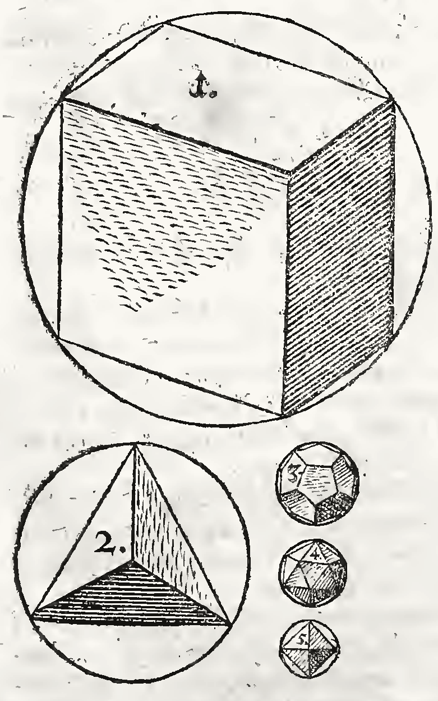

Proposition XXV: The Five Most Perfect Regular Solid Congruences¶
Proposition XXV.
The most perfect and regular congruences of plane figures for forming a solid figure are five.
This is a scholium to the last proposition of the last book of Euclid ([XIII.18]). For by Proposition XV of this book, we begin with three angles, and by Proposition XVI we leave off at six triangles, four squares, and three hexagons, because by Proposition XVII [XVIII] these equal four right angles.
Therefore three triangles meeting at each angle make less than four, that is, two plane right angles; when three triangles are fitted together, the gap is filled by a fourth triangle. Hence the Tetrahedron, or Pyramid (No. 2 of the following figure).
Four triangles meeting at each angle make eight thirds, which is less than twelve thirds, or four right angles; and when the sides of the triangles are joined there arises a pyramid with a gaping four-sided base, with which another such pyramid with a like gap is congruent from the opposite side, to close the figure on all sides. Hence the Octahedron (Oo and No. 5 on the following folio).
Five triangles meeting at each angle make ten thirds, which is less than twelve thirds, and when ten and ten sides are fitted together at a common angle there is formed a pyramid with a five-angled base; whose angles at the base, that they too may become five-planed, require that to every two planes on that base three other plane angles be fitted, and thus to those ten fifteen others, and just as many extend in the opposite direction—which sum of thirty planes is ten triangles, out of which in the middle a belt or
f. 0074 · p. 58column is formed, gaping below as above with a five-angled figure, into which another five-sided pyramid is congruent, so that the figure is closed on all sides. Hence the Icosahedron (Pp and No. 4 here).
Thus we have done with triangles alone.
Three square angles are three right angles, less than four plane right angles; they are therefore congruent to form a solid angle, and the joined squares gape with three plane right angles, while conversely three angles of those three planes project outward: three other squares therefore, meeting by single angles into one solid angle, are fitted and congruent to fill those gaps with their projecting angles, and to receive those projecting angles in their gaps. Hence the Hexahedron or Cube (Qq and No. 1 here).
Four squares equal four right angles, wherefore by Proposition XVI they form nothing solid. Thus we have done with squares alone.
Three pentagonal angles are eighteen fifths of one plane right angle, less than twenty fifths or four right angles; they are congruent therefore to form one solid angle. And if one pentagon at the base be surrounded in this way by five others, the figure gapes upward with five plane pentagonal angles, and has five projecting plane pentagonal angles. Another figure like this must therefore be built on the opposite side, and the five projecting angles of each are congruent into the five gaps of the other, and conversely. Hence is born the Dodecahedron (Rr and No. 3 here). Thus we have done with pentagons alone, and at the same time with all figures of one single species to be fitted together, because three hexagons, by Proposition XVI, do not rise to form a solid.
These are those five bodies which the Pythagoreans, Plato, and Proclus the commentator on Euclid were wont to call the cosmic figures; how they were applied to the cosmic bodies, I said in the preamble to Book I, is uncertain. It is indeed the common persuasion, drawn from Aristotle, that those philosophers had regard to the five simple bodies of the world according to the fivefold number of these figures—namely, to the four Elements, Fire, Air, Water, Earth, and to the so-called Quintessence, or celestial matter—comparing the properties of the figures with the qualities of those simple bodies. For in the Cube, uprightness upon a square base has a certain shadowing forth of stability, which is also the property of terrestrial matter seeking the lowest places by the impulse of gravity, since the whole globe of the Earth is commonly believed to rest in the midst of the world. Conversely, the posture of the Octahedron is congruent to its appearance if it be suspended as on a lathe from two opposite angles, between which precisely in the middle lies a hidden
f. 0083 · p. 59quadrilateral dividing the body of the figure into two equal parts, just as a great circle divides a globe suspended from two poles: this is a certain image of mobility, even as Air is the most mobile of the elements both in swiftness and in variety of regions.
In the Tetrahedron the fewness of planes seems to signify the dryness of Fire, since it is the definition of dry things to be contained within their own bounds; in the Icosahedron, conversely, the multitude of planes seems to signify the wetness of Water, since wetness is defined as being contained by the bounds of another: for fewness is an index of what is one’s own, multitude of what is borrowed and foreign. And in another way too, the plane triangle is proper to the Tetrahedron, because the whole tetrahedral figure is a solid triangle; whereas the same triangle is not proper to the Icosahedron, but borrowed, because the solidity of the Icosahedron resembles a pentagon, not a triangle. Again, in the sharp point of the Tetrahedron rising from a single base, the penetrating and dividing force of Fire seems shadowed forth; in the obtuse five-lined angle of the Icosahedron, the filling power of humors, that is, the power of moistening; in the smallness and leanness of the Tetrahedron, the nature of Fire; in the globe-like bulk of the Icosahedron, the nature of Water, and a certain figure as of a drop; in the Tetrahedron there is most surface and least body, in the Icosahedron bodily bulk is much greater than surface—even as in Fire form excels, in Water matter.
The Dodecahedron, finally, is left for the celestial body, having the same number of planes as the celestial Zodiac has of signs, and being demonstrated to be the most capacious of the remaining figures, even as heaven contains all things.
Although this analogy is plausible—not indeed to Aristotle (who, since he denied that the world was created, could not acknowledge an archetypal power in quantitative figures, inasmuch as without an Architect there is no power in them to make anything corporeal), yet to me and to all Christians, who hold by faith that the world, when previously it was not, was created by God in weight, measure, and number, namely by Ideas coeternal with Himself—although, I say, this analogy is plausible in general, yet thus shaped in particular it is held together by no necessity, and suffers objections, not only from the discrepancy of certain properties within the same analogy, but also from the greater suitability of the Dodecahedron and Icosahedron to Fire; and finally because the dispute concerning the number of the elements and the rest of the Earth is far greater than concerning the number of these figures.
And if the Pythagoreans stopped here, I do not blame Ramus in this part, nor Aristotle, for having shaken and rejected this analogy in their disputations. Yet twenty-four years ago I sought out these five bodies in the fabric of the world in a far different way; and I said in the preamble of Book I that it seemed probable to me that the same doctrine was also that of the ancients, though hidden after the manner of their sect. For since the Copernican astronomy—or that of the ancient Pythagorean Aristarchus of Samos—holds such a disposition of the movable world that there are in it six orbs or courses led round about the immovable body of the Sun in the center, parted by great and mutually unequal intervals, of Saturn outermost, then Jupiter, then Mars, then Earth with the Moon, then Venus, and finally Mercury innermost; and since it is proper and essential to these five figures to be inscribed in a spherical surface by their angles, and circumscribed about a spherical surface by the centers of their planes, so that to each figure belongs a fixed interval between its own two orbs: nothing could appear more plausible than that the five intervals of those six celestial orbs
f. 0084 · p. 60were taken by the Creator from the five figures; in this order, that the Cube be conceived between the orbs of Saturn and Jupiter, the Tetrahedron between Jupiter and Mars, the Dodecahedron between Mars and Earth, the Icosahedron between Earth and Venus, and the Octahedron between Venus and Mercury.
This distribution can be tested by numbers; it carries necessity with it; it does not anxiously hunt for the number of bodies, but takes possession of the number already found; and finally it is so established that in these twenty-two years it has not only found no refuter, but has even won over the disciples of Ramus himself—that rash master and scourger of Euclid—and today wins over so many that mathematicians have long since demanded a second edition. But to treat of this matter at greater length does not belong to this Second Book; the reader will find more below in Book V, and something also in Book IV of the Epitome of Astronomy, where the genuine origin of these five solid figures is explained metaphysically: for this origin through angular joinings is not truly their origin, but follows upon them once arisen, as something posterior in nature.
f. 0081 · pp. Plates Oo–Rr

